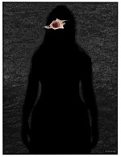

The hidden truths about domestic violence
Don Edgar

The Age, 29 January 2015.
As head of the new Royal Commission into family violence, Justice Marcia Neave faces quite a challenge to find a 'solution'. What she will find at the outset is that data to define the problem in the first place are missing.
The Royal Commission is charged with finding the most effective ways to 'prevent family violence, improve early intervention, protect those most at risk, support victims and make perpetrators more accountable'. The last three goals are easier than the first two because they come after the violence is perpetrated. The first two, however, are shrouded in obfuscation and political correctness.
The very term domestic violence, even family violence, immediately puts the issue in the realm of private life, a sacred domain of individual choice and family values that imply outside interference is unwarranted. That is why reported figures are doubtless lower than the probable reality. To 'prevent' implies getting inside family life and/or a massive re-education program (about equality, mutual respect, the respective rights and powers of men and women, the damage done to children who witness violence). To 'support' will necessarily involve some invasion of family privacy and the provision of more shelters or financial and counselling support than are at present available.
We know that Australia-wide, 2% of women and 1% of men have experienced violence from a current partner; 15% of women and 5% of men have experienced violence at the hands of a former partner. That sounds low, yet in Victoria alone, there were over 65,000 cases reported to police in 2013-14. Reporting has increased with more social awareness, but other family members, neighbours, teachers, doctors and others on the front line still under-report. Victims themselves are often intimidated into silence by their partners so we have inadequate data to indicate who is at most risk.
We don't even know (or want to talk about) who, which groups or individuals, need to be protected or supported. The research does not categorise the incidence of domestic violence in other than very broad terms. Patricia Easteal's 1996 research for the Institute of Family Studies found 43% of offenders were 'Australian', 7% Aboriginal, 15% Asian, 23% European, 5% Middle Eastern/African and 4% Latin American. But which groups, ethnicities, religions within Europe or Asia or elsewhere are unknown. Do Italians or Germans offend more or less than the British? Do Chinese or Indians, Buddhists or Muslims treat their women more violently?
The latest overview by the Australian Bureau of Statistics (2013, based on the 2012 Personal Safety Survey) breaks the figures down by gender, age group, State and Disability, but not by ethnicity or religion. It categorises the experience of violence by country of birth only in very broad terms (English-speaking, 0.8%, Other countries 12.2%, Total born overseas 20.1%). The background of sexual assault victims is also hard to unpack– Australia 16.2% in last 12 months, 3% since age 15; Overseas (English-speaking 41.7% in last 12 months, 7.5% since age 15; other languages 36.6% in last 12 months, 10.9% since age 15).
The common media image of a perpetrator as an uneducated, drunken Ocker male is just part of the picture. But we tread on sensitive ground if we want to say women in some ethnic groups, or some religions, even 'immigrants', are more 'at risk' than others. Or to suggest part of the problem is that such women, now experiencing life in a less gender-biased society, may be questioning and provoking anger in their previously dominant menfolk.
We know that 20% of Aboriginal women experience violence compared with 7% of non-Aboriginal women; they experience sexual assault at three times the rate of other women. It often happens in public and is not reported to police. Warren Mundine, Chairman of the Indigenous Advisory Council, recently called for an 'End to the tiptoeing', saying one in every ten Aboriginal children has been removed from parents in NSW, often because of domestic violence against both the mother and the children. Yet discussion is impeded by a reluctance to ask what it is about Aboriginal family culture (apart from an irreparable history of dispossession and removal) that might explain it. Instead we 'pussyfoot' around the issue, just as we do about saying some religions and ethnic groups view women as the chattels of men, control them within domestic confines and resist any attempts to change attitudes or protect those who are the victims.
Countless research studies suggest that alcohol is involved in much domestic violence, yet not every male perpetrator drinks alcohol. Moreover, we know that, even when drunk, men usually acknowledge they stop before 'killing' their partner, an indication that their violence is a deliberate act, not an unconscious or uncontrollable one. Alcohol is not an adequate explanation.
Women who are less well educated, or unemployed, experience more violence. So do young women between the ages of 18-24. The incidence is higher during pregnancy (36%), suggesting the male's 'right' to sex is under threat. It is higher in remote and regional areas and for women with disabilities. Recent arrivals and refugees suffer economic disadvantage, language barriers, lack community support, don't know the laws and are often isolated and invisible in the home. Yet the onset of abuse precedes their migration to Australia, and use of alcohol is lower in such groups, so acceptance of violence has to be a cultural issue as well as a situational one.
Marcia Neave will have to paddle strongly in these muddied waters if her Commission is to come up with any solutions beyond what is already known. Bravely confronting some taboos and hidden truths is one way to go.
Dr Don Edgar is a member of the Victorian Children's Council, an Ambassador for the National Ageing Research Institute and the foundation Director of the Australian Institute of Family Studies.